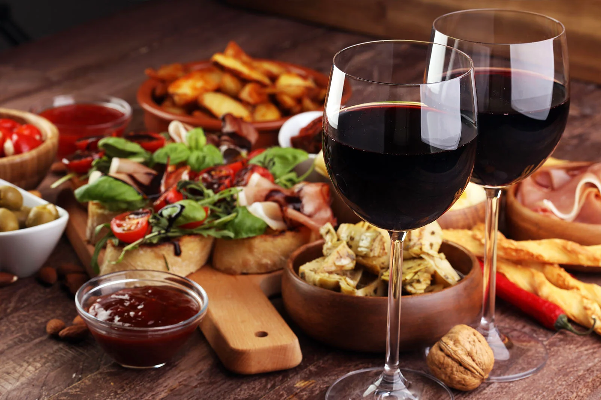
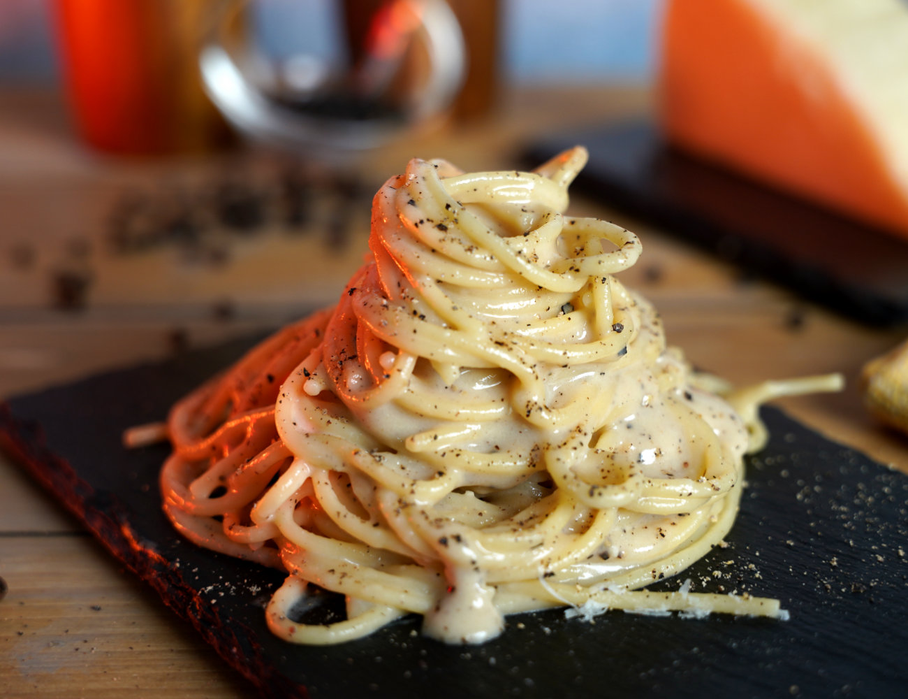
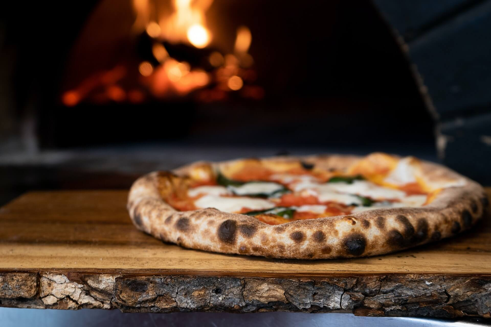

Menu
Antipasti

-
Bruschetta al Pomodoro
A classic Italian appetizer featuring toasted rustic bread topped with a vibrant mix of ripe tomatoes, fresh basil, garlic, and a drizzle of extra virgin olive oil. Simple, yet bursting with flavor.
$9.00
-
Carpaccio di Manzo
Thinly sliced raw beef tenderloin, delicately seasoned with lemon, capers, arugula, and shavings of Parmigiano Reggiano.
$14.00
-
Frittura di Calamari e Gamberi
Crispy fried calamari and shrimp, served with a tangy marinara dipping sauce. Lightly battered and golden brown, this dish captures the essence of seaside Italy.
$16.00
-
Polpette alla Napoletana
Tender meatballs made from a blend of beef and pork, slow-simmered in a rich tomato sauce with garlic and basil. Served with freshly baked bread for dipping into the flavorful sauce.
$12.00
-
Arancini di Riso
Golden, crispy rice balls stuffed with a creamy mixture of mozzarella and ragu, then lightly fried to perfection. Served with a side of tangy marinara sauce for dipping.
$11.00
-
Antipasto Misto
A generous platter featuring a variety of Italian cured meats, such as prosciutto di Parma, salami, and coppa, paired with marinated olives, roasted peppers, and an assortment of artisanal cheeses.
$18.00
Pasta

-
Spaghetti alla Carbonara
A classic Roman dish made with al dente spaghetti, creamy eggs, rich Pecorino Romano cheese, crispy guanciale, and a touch of black pepper.
$18.00
-
Tagliatelle al Tartufo
Fresh tagliatelle pasta tossed in a luxurious truffle cream sauce, finished with shaved black truffles.
$22.00
-
Penne alla Vodka
Penne pasta in a creamy tomato sauce with a hint of vodka, garlic, and fresh basil.
$16.00
-
Lasagna alla Bolognese
Layers of handmade pasta, rich Bolognese meat sauce, béchamel, and melted mozzarella, baked to perfection.
$20.00
-
Gnocchi al Pesto Genovese
Soft, pillowy gnocchi served with a fragrant basil pesto sauce made with garlic, pine nuts, Parmigiano Reggiano, and extra virgin olive oil.
$18.00
-
Fettuccine ai Frutti di Mare
Fettuccine pasta served with a medley of fresh seafood—shrimp, calamari, mussels, and clams—tossed in a light garlic, white wine, and tomato sauce. A perfect dish for seafood lovers.
$24.00
Pizza

-
Margherita
Classic pizza with fresh tomato sauce, mozzarella, basil, and a drizzle of olive oil. Simple and delicious.
$14.00
-
Diavola
Spicy salami, tomato sauce, mozzarella, and a sprinkle of chili flakes. A fiery, bold flavor.
$18.00
-
Quattro Stagioni
Tomato sauce, mozzarella, artichokes, olives, mushrooms, and ham. Divided into four sections, each representing a season.
$20.00
-
Prosciutto e Funghi
Tomato sauce, mozzarella, prosciutto, and fresh mushrooms. A classic combination that never disappoints.
$18.00
-
Capricciosa
Tomato sauce, mozzarella, ham, mushrooms, artichokes, and olives. A well-balanced, savory option.
$19.00
-
Marinara
Tomato sauce, garlic, oregano, and olive oil. No cheese, just bold flavors of garlic and herbs.
$12.00
Insalata

-
Insalata Caprese
A refreshing combination of ripe heirloom tomatoes, creamy mozzarella di bufala, fragrant basil, and a drizzle of balsamic reduction and extra virgin olive oil.
$14.00
-
Insalata di Rucola e Parmigiano
A zesty arugula salad with shavings of Parmigiano Reggiano, pine nuts, and a lemon-olive oil dressing.
$12.00
-
Insalata Mista
A classic mixed green salad with cherry tomatoes, cucumbers, radishes, and red onions, tossed in a house-made balsamic vinaigrette.
$10.00
-
Insalata di Pollo alla Griglia
Grilled chicken breast served on a bed of mixed greens, roasted bell peppers, red onions, and cherry tomatoes, topped with a lemon-oregano vinaigrette.
$18.00
-
Insalata di Finocchio e Arance
A refreshing salad of thinly sliced fennel and sweet orange segments, garnished with olives, red onion, and a light olive oil dressing.
$14.00
-
Insalata di Mare
A seafood salad featuring a variety of fresh shellfish—shrimp, squid, and octopus—marinated in lemon, olive oil, and herbs, and served with a bed of mixed greens.
$22.00